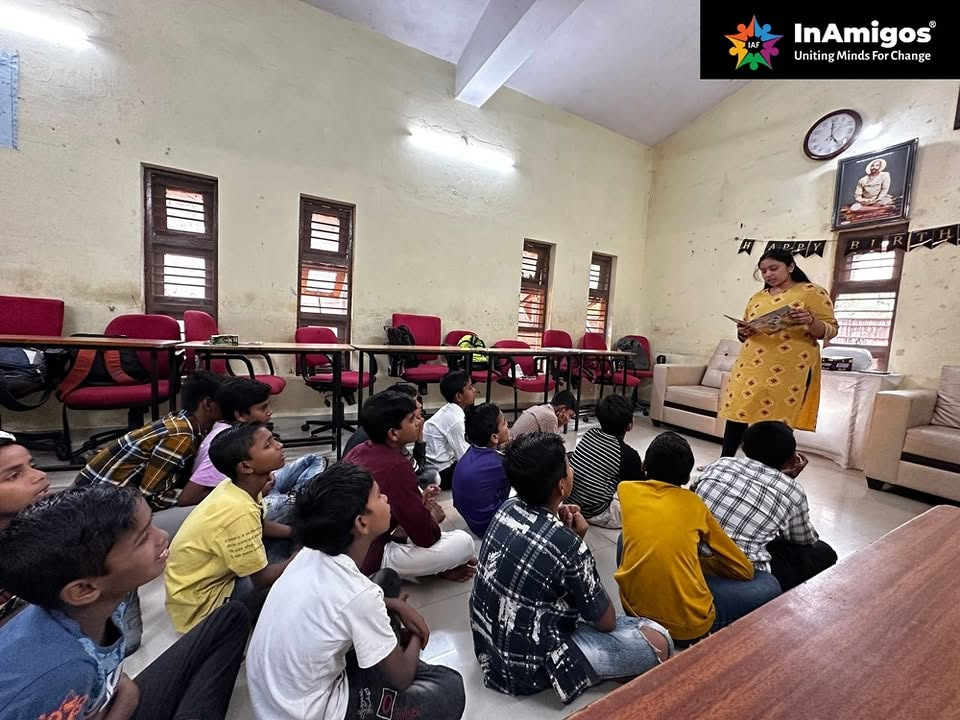
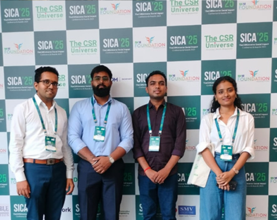
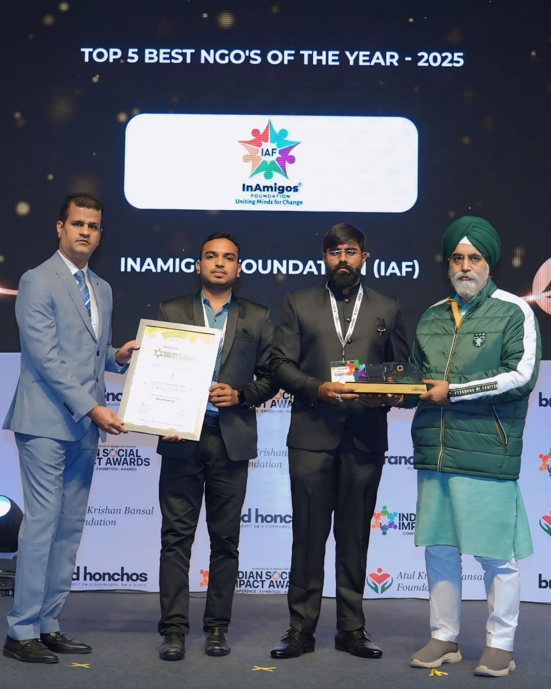
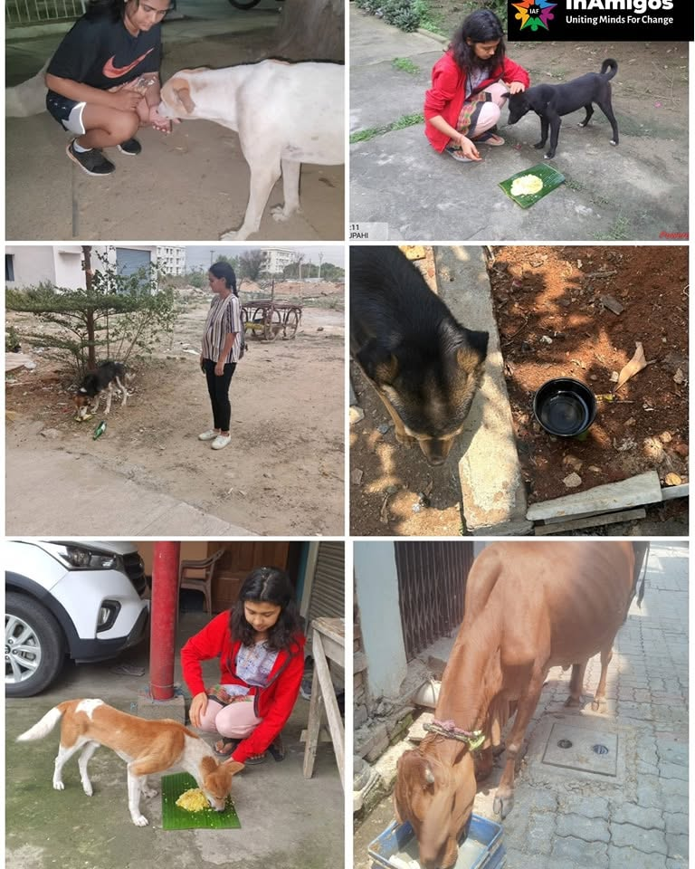
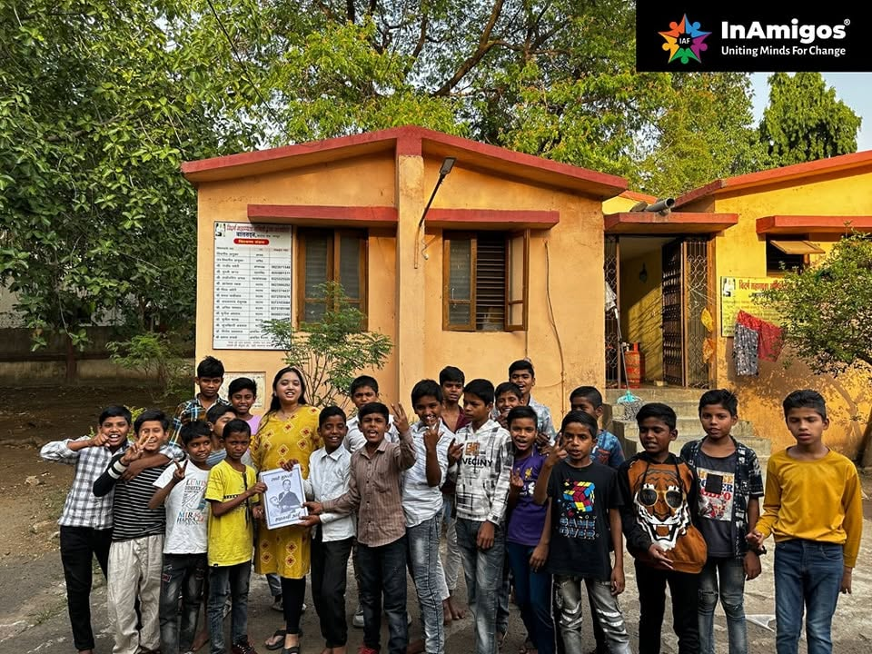
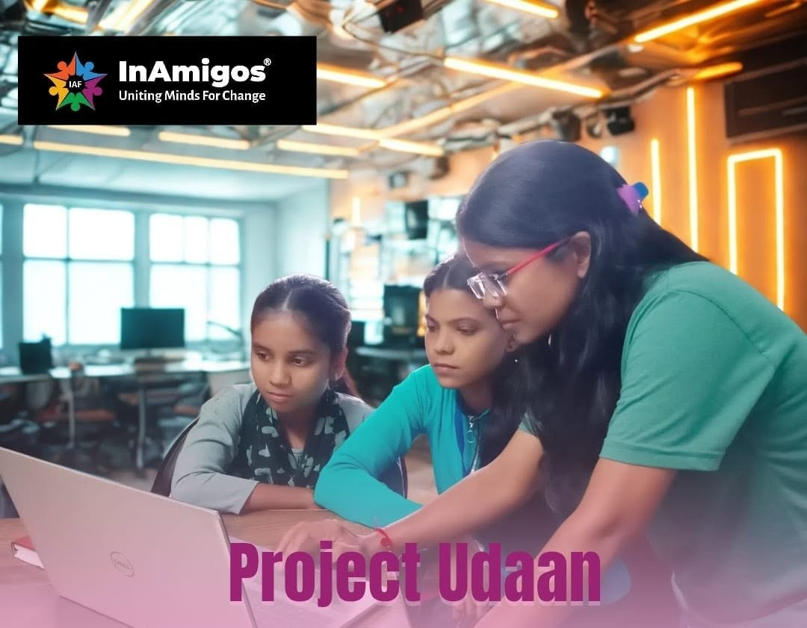
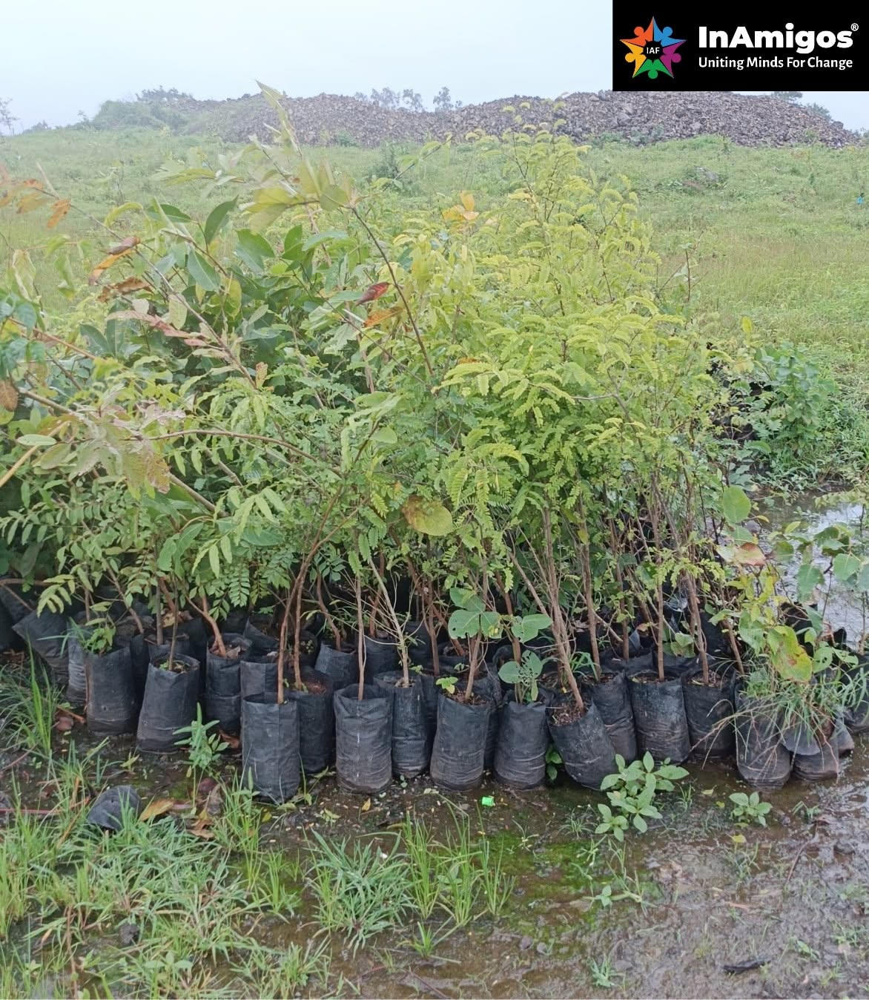

Project Prakriti
Environmental restoration through mass plantation drives across Chhattisgarh.
InAmigos Foundation is a Central-Government-licensed NGO working across environment, nutrition, education and girl-child empowerment — building a compassionate, inclusive society where no one is left behind.
InAmigos Foundation is an NGO licensed by the Central Government and registered under Section 8 of the Companies Act, 2013. Based in Bilaspur, Chhattisgarh, we were founded on 23rd September 2020 and have since worked tirelessly for the betterment of society — uniting minds, hearts and hands for meaningful change.
From mass tree-plantation drives to daily community kitchens, girl-child empowerment campaigns and free education for rural children, every InAmigos project is run by a close-knit core team and a growing community of volunteers and interns.
To create a compassionate and inclusive society where every individual has access to education, nutrition, healthcare, and dignity — a world where no one is left behind.
Six focused initiatives carry InAmigos' mission forward — each tackling a different dimension of social and environmental wellbeing.
Environmental restoration through mass plantation drives across Chhattisgarh.
Daily hot meals to slum areas, orphanages and festival community kitchens.
Digital campaigns empowering girls through education and skill development.
Street animal feeding drives and veterinary welfare support.
Free education for rural children — books, stationery and one-to-one mentoring.
Promoting skill development, creativity and innovation through practical, hands-on learning.
Every contribution — money, time or skills — is channelled directly into on-ground work across four focus areas.
Moments from field visits, education drives, blood donation camps and community outreach.








InAmigos Foundation operates under full government recognition with complete financial transparency.
We're recruiting volunteers and interns for 1–3 month programs in field work, teaching, design, content, fundraising, AI & web development and more. Every hand helps us reach one more family, one more child, one more tree.